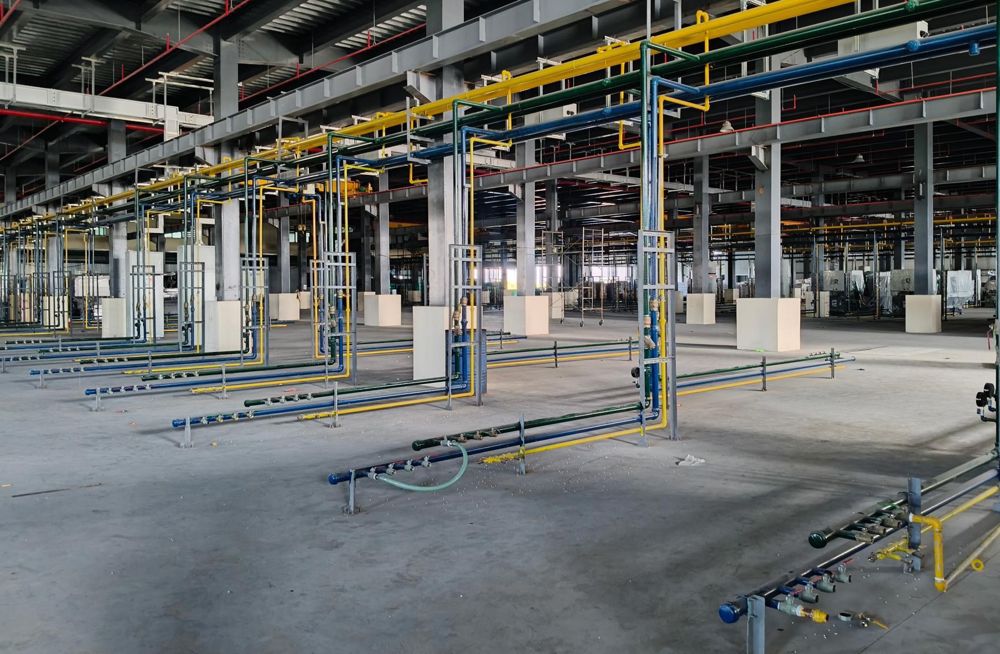

Your contractor in Batangas
Fire protection, structured cabling and industrial piping for plants, warehouses and buildings across the province, from our office in Tanauan.
Request a quote
What we do in Batangas
Three services Batangas plants and warehouses ask us for most, each installed, tested and then serviced by the same crew.
One contractor for the fire system, the network and the plant utilities means one quotation, one programme and one handover pack.
Fire protection and FDAS
- Sprinklers, standpipes and hydrants
- Fire pumps and pump rooms
- Fire detection and alarm systems
- BFP, DOLE and PEZA permit support
Structured cabling and CCTV
- Cat6 and fibre
- Racks, patching and labelling
- Wi-Fi for scanners
- IP CCTV and NVR
Industrial piping
- Compressed air
- Chilled and cooling water
- Process and fire lines
- LPG gas lines
Where we work
Every town and city in Batangas, with most of our work in the industrial corridor along the STAR Tollway.
Our office is in Brgy. Trapiche, Tanauan, on the STAR Tollway side of the province, so crews reach the Sto. Tomas, Malvar and Lipa industrial parks the same morning and Batangas City and the western towns within the day.
Towns and cities
- Tanauan City and Sto. Tomas
- Malvar and Lipa City
- Batangas City, Bauan and San Jose
- Rosario, Ibaan and Padre Garcia
- Calaca, Lemery and Balayan
- Nasugbu and the western towns
Industrial parks
- First Philippine Industrial Park (FPIP), Sto. Tomas and Tanauan
- Light Industry and Science Park III, Sto. Tomas
- LIMA Technology Center, Malvar and Lipa
- Warehouses and plants outside the ecozones
Have a project in Batangas?
Send the layout or drawings if you have them. Without drawings we visit the site, give a budget figure, then firm it up.
Request a quoteQuestions from Batangas clients
Which parts of Batangas do you cover?
All of Batangas. We are based in Tanauan and regularly work in Sto. Tomas, Malvar, Lipa and the FPIP, LISP III and LIMA industrial parks, and travel to Batangas City, Calaca, Nasugbu and the rest of the province. We also take projects in Laguna, Cavite and nationwide.
Where is your office?
B17 L11 Plaincrest Subd., Brgy. Trapiche, Tanauan, Batangas. Open Monday to Saturday, 8am to 6pm.
Can one contract cover more than one service?
Yes. A plant can have its fire protection, cabling and machine utilities under one quotation, one programme and one handover pack.
How do we get a quotation?
Call 0926-668-8988 or send the enquiry form with your layout, drawings or specification. Without drawings we can survey the site, give a budget figure, then firm it up.